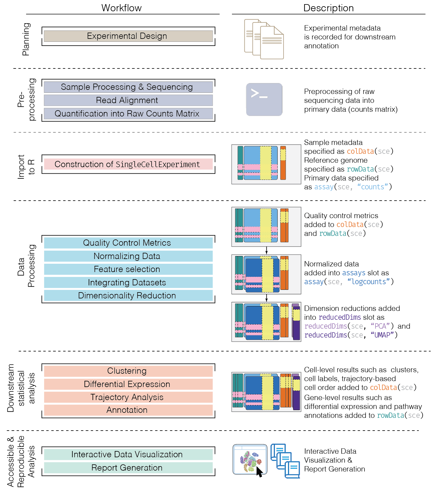
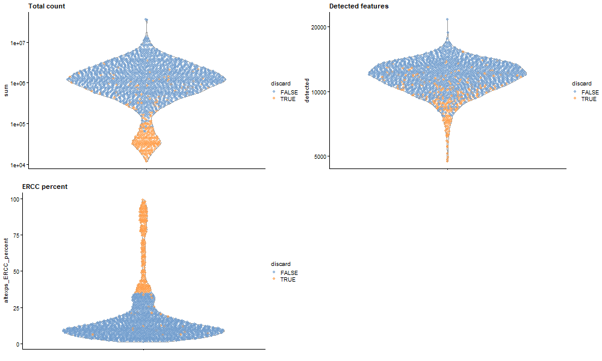
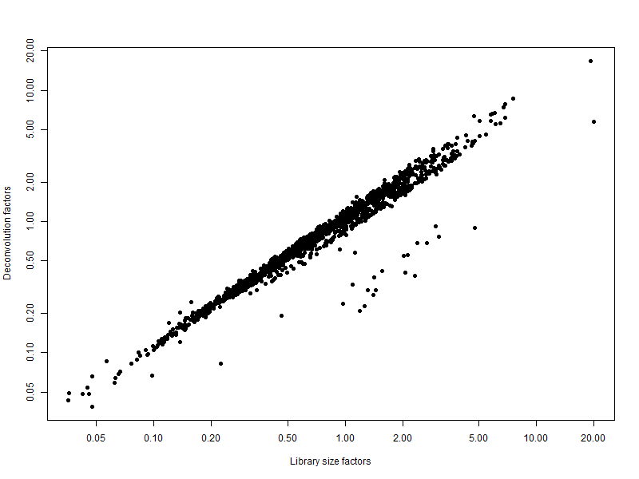
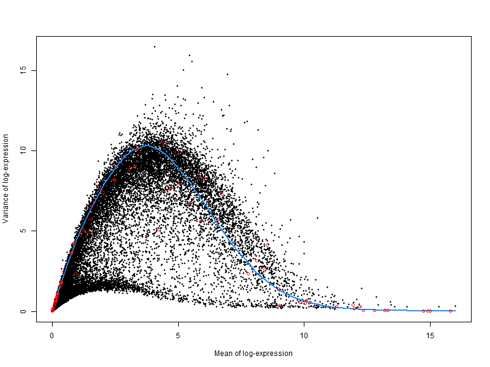
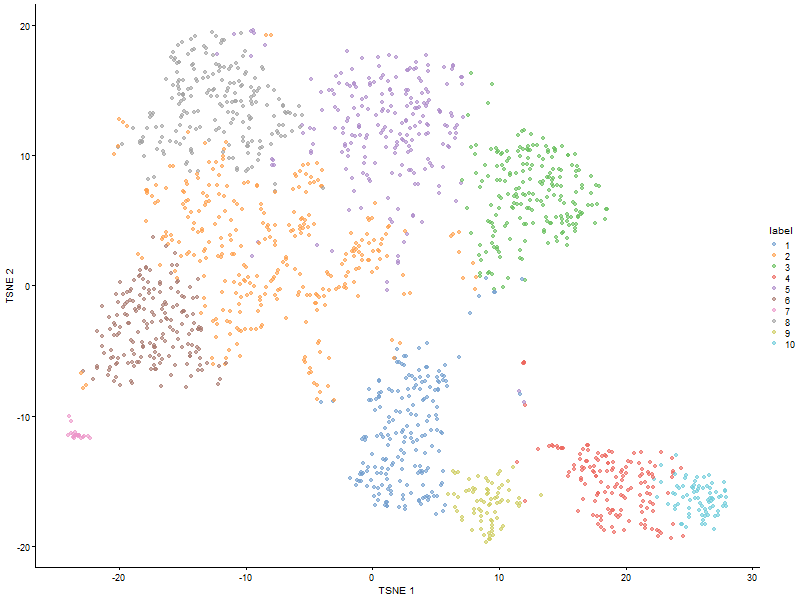
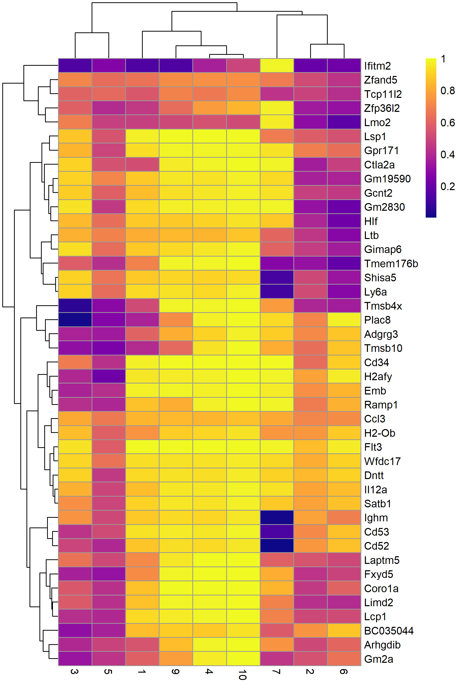
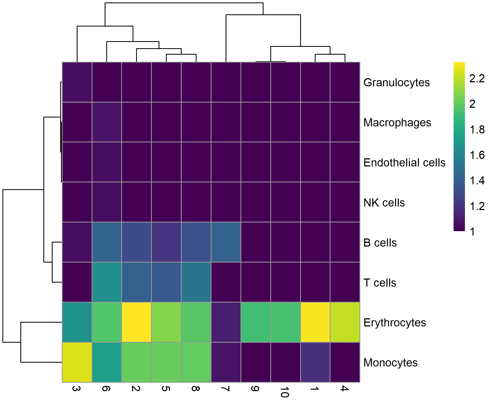

Single-cell RNA-seq Analysis of Mouse Hematopoietic Stem and Progenitor Cells Using Bioconductor
Kwesi Kumi, Noah Cupp, Duong Nguyen, Kashif Mashood
Introduction
Single cell RNA sequencing measures gene expression in individual cells. It is able to provide significant insight on cellular diverstiy as it is used to detect changes in gene expression during the onset and progression of diseases or treatment response.
Package Installation
Here is the code to install the simpleSingleCell package
if (!require("BiocManager", quietly = TRUE))
install.packages("BiocManager")
BiocManager::install("scRNAseq")Data Overview
Data Loading an Annotation
The data that was chosen for this analysis was a mouse haematopoetic stem cell (HSC) dataset generated with Smart-seq2.
library(scRNAseq)
library(AnnotationHub)
sce.nest <- NestorowaHSCData()
ens.mm.v97 <- AnnotationHub()[["AH73905"]]
anno <- select(ens.mm.v97, keys=rownames(sce.nest),
keytype="GENEID", columns=c("SYMBOL", "SEQNAME"))
rowData(sce.nest) <- anno[match(rownames(sce.nest), anno$GENEID),]
#Inspect the resulting SingleCellExperiment object
sce.nestclass: SingleCellExperiment
dim: 46078 1920
metadata(0):
assays(1): counts
rownames(46078): ENSMUSG00000000001 ENSMUSG00000000003 ...
ENSMUSG00000107391 ENSMUSG00000107392
rowData names(3): GENEID SYMBOL SEQNAME
colnames(1920): HSPC_007 HSPC_013 ... Prog_852 Prog_810
colData names(9): gate broad ... projected metrics
reducedDimNames(1): diffusion
mainExpName: endogenous
altExpNames(2): ERCC FACSWe used the Nestorowa hematopoietic stem cell single-cell RNA-seq dataset from the scRNAseq Bioconductor package. The dataset contains 46,078 genes across 1,920 cells and is stored as a SingleCellExperiment object, eliminates the need for raw data import and ensures a standardized structure where counts, gene annotations, and cell metadata are already, which allowed us to perform quality control, annotation, normalization, and visualization using standard Bioconductor tools.
METHOD OVERVIEW OF WORKFLOW
Overview of the framework of a typical scRNA-seq analysis workflow

Figure 1: Overview of the single-cell RNA-seq analysis workflow adapted from a Bioconductor pipeline.
No count loading step was required in this analysis because the Nestorowa dataset was accessed directly through the scRNAseq package as a pre-constructed SingleCellExperiment object. This means the data is already loaded and pre-processed, with counts stored in memory, rows representing genes, columns representing individual cells, and associated metadata already included within the object. Unlike the original workflow that begins with manually importing raw count files from GEO , this approach allows us to skip data loading and focus directly on downstream analysis steps such as quality control, normalization, and visualization.
Quality Control
Quality control (QC) was conducted to remove low-quality cells based on metrics such as library size, number of detected genes, and mitochondrial gene expression. Thresholds were applied using median absolute deviation (MAD)-based outlier detection, following standard Bioconductor single-cell analysis workflows .
A copy of the dataset was saved prior to quality control to allow comparison between filtered and unfiltered cells. This enabled visualization of which cells were removed based on QC metrics.
unfiltered <- sce.nestQuality control metrics were calculated for each cell, including library size, detected genes, and ERCC spike-in percentage. Low-quality cells were automatically identified using MAD-based thresholds and removed from the dataset to ensure reliable downstream analysis.
library(scater)
# Computes quality metrics for each cell, calculates total counts (library size), number of detected genes, percentage of counts from subsets (e.g., ERCC) -> help identify low-quality cells
stats <- perCellQCMetrics(sce.nest)
# Automatically flags poor-quality cells
qc <- quickPerCellQC(stats, percent_subsets="altexps_ERCC_percent")
#Removes low-quality cells from the dataset
sce.nest <- sce.nest[,!qc$discard]# counts how many cells were flagged for each QC criterion.
colSums(as.matrix(qc)) low_lib_size low_n_features high_altexps_ERCC_percent
146 28 241
discard
264 Quality control identified cells with low library size (146 cells), low detected features (28 cells), and high ERCC spike-in percentage (241 cells). A total of 264 cells were removed after combining these criteria. The high number of cells with elevated ERCC proportions suggests that technical noise was the primary factor influencing cell quality in this dataset.
QC metrics were added to the dataset and visualized to assess cell quality. Cells were colored based on whether they were retained or discarded. Low-quality cells showed lower library sizes, fewer detected genes, and higher ERCC spike-in proportions, confirming that these metrics effectively distinguish technical artifacts from high-quality cells.
if (!dir.exists("images")) dir.create("images")
png("images/qc_plot.png", width = 1000, height = 600)
colData(unfiltered) <- cbind(colData(unfiltered), stats)
unfiltered$discard <- qc$discard
gridExtra::grid.arrange(
plotColData(unfiltered, y="sum", colour_by="discard") +
scale_y_log10() + ggtitle("Total count"),
plotColData(unfiltered, y="detected", colour_by="discard") +
scale_y_log10() + ggtitle("Detected features"),
plotColData(unfiltered, y="altexps_ERCC_percent",
colour_by="discard") + ggtitle("ERCC percent"),
ncol=2
)
dev.off()
Figure 2: Distribution of quality control (QC) metrics across cells in the Nestorowa dataset. Each point represents a cell and is colored according to whether it was retained (blue) or discarded (orange) after QC filtering.Normalization
Normalization was performed to adjust gene expression values across cells and remove technical differences such as sequencing depth and capture efficiency.
library(scran)
set.seed(101000110)
# Group cells into clusters to pool similar cells -> improve normalization accuracy
clusters <- quickCluster(sce.nest)
# Estimates scaling factors for each cell based on pooled expression counts
sce.nest <- computeSumFactors(sce.nest, clusters=clusters)
#normalized log-expression values
sce.nest <- logNormCounts(sce.nest)Normalization was performed using a deconvolution-based method implemented in the scran package to account for differences in sequencing depth and capture efficiency across cells. Normalized log-expression values were calculated for downstream analysis.
Summarizes normalization factors across cells to checks whether normalization behaved reasonably (values centered around 1)
summary(sizeFactors(sce.nest)) Min. 1st Qu. Median Mean 3rd Qu. Max.
0.03876 0.42023 0.74297 1.00000 1.24900 16.78896 Compare library size factors (simple normalization) vs deconvolution factors (scran) to confirms normalization is consistent and Shows that scran adjusts for additional technical biases beyond total counts
# Save plot
png("images/normalization_plot.png", width = 800, height = 600)
plot(librarySizeFactors(sce.nest), sizeFactors(sce.nest), pch=16,
xlab="Library size factors", ylab="Deconvolution factors", log="xy")
dev.off()
Figure 3: Relationship between the library size factors and the deconvolution size factors in the Nestorowa HSC dataset.The plot compares simple normalization (library size) with scran normalization. Each point represents a cell. The positive relationship indicates that both methods capture differences in sequencing depth, while deviations from a straight line show that scran normalization adjusts for additional technical variation beyond total counts.
Variance modelling
Variance modelling was performed to distinguish biological variation from technical noise in gene expression data and to identify highly variable genes (HVGs) for downstream analysis.
The spike-in transcripts is used to model the technical noise as a function of the mean
set.seed(00010101)
dec.nest <- modelGeneVarWithSpikes(sce.nest, "ERCC")
top.nest <- getTopHVGs(dec.nest, prop=0.1)A plot was generated to visualize the relationship between mean expression and variance. The blue curve represents expected technical noise estimated from ERCC spike-ins. Genes above the curve show higher variability and are selected as highly variable genes (HVGs).
png("images/variance_plot.png", width = 800, height = 600)
plot(dec.nest$mean, dec.nest$total, pch=16, cex=0.5,
xlab="Mean of log-expression", ylab="Variance of log-expression")
curfit <- metadata(dec.nest)
curve(curfit$trend(x), col='dodgerblue', add=TRUE, lwd=2)
points(curfit$mean, curfit$var, col="red")
dev.off()
Figure 4: Per-gene variance as a function of the mean for the log-expression values in the Nestorowa HSC dataset. Each point represents a gene (black) with the mean-variance trend (blue) fitted to the spike-ins (red).
Dimensionality Reduction
Dimensionality reduction was performed to simplify the high-dimensional gene expression data into a few summary variables (principal components). Only the important signals are kept, and noise is removed. Then t-SNE is used to visualize how cells group together.
set.seed(101010011)
sce.nest <- denoisePCA(sce.nest, technical=dec.nest, subset.row=top.nest)
sce.nest <- runTSNE(sce.nest, dimred="PCA")The number of retained principal components was checked:
ncol(reducedDim(sce.nest, "PCA"))[1] 9Clustering
Clustering helps identify groups of cells with similar expression patterns, which often correspond to different cell types or biological states. Using an SNN graph improves robustness by considering shared neighbors rather than direct distances, making it well-suited for noisy single-cell data. The Walktrap algorithm detects communities within this graph, allowing discovery of meaningful cell populations.
snn.gr <- buildSNNGraph(sce.nest, use.dimred="PCA")
colLabels(sce.nest) <- factor(igraph::cluster_walktrap(snn.gr)$membership)Counts how many cells are in each cluster.
table(colLabels(sce.nest)) 1 2 3 4 5 6 7 8 9 10
198 319 208 147 221 182 21 209 74 77 A t-SNE plot was generated to visualize cell clustering. Cells are grouped based on gene expression similarity, and colored by cluster labels. Distinct clusters indicate the presence of multiple cell populations within the dataset.
png("images/tsne_clusters.png", width = 800, height = 600)
plotTSNE(sce.nest, colour_by="label")
dev.off()
Figure 5: t-SNE plot of the Nestorowa HSC dataset, where each point represents a cell and is colored according to the assigned cluster.
Marker gene detection
After clustering, marker genes help explain what each cluster represents biologically. For example, if a cluster has high expression of known erythroid genes, that cluster may represent erythroid precursor cells.
markers <- findMarkers(sce.nest, colLabels(sce.nest),
test.type="wilcox", direction="up", lfc=0.5,
row.data=rowData(sce.nest)[,"SYMBOL",drop=FALSE])To illustrate the manual annotation process, marker genes for one cluster were examined. In this example, marker gene results for cluster 8 were selected, and the top-ranked genes were retained. Their AUC values were extracted to assess how well each gene distinguishes cluster 8 from other clusters. Genes with higher AUC values provide better separation of this cluster. The upregulation of genes such as Car2, Hebp1, and hemoglobin-related genes suggests that cluster 8 represents erythroid precursor cells.
chosen <- markers[['8']]
best <- chosen[chosen$Top <= 10,] # Keep top 10 marker genes
aucs <- getMarkerEffects(best, prefix="AUC") # Extract AUC values
rownames(aucs) <- best$SYMBOL # Fix: ensure unique rownames
library(pheatmap)
pheatmap(
aucs,
color = viridis::plasma(100),
filename = "images/marker_heatmap_cluster8.png",
width = 6,
height = 9
)
Figure 6: Heatmap of the AUCs for the top marker genes in cluster 8 compared to all other clusters.Cell Type Annotation
Annotation was performed using the SingleR package. Single-cell clustering identifies groups of similar cells, but does not directly reveal their biological identity. SingleR enables automated annotation by leveraging reference datasets with known cell types. This approach helps interpret clusters in a biological context and validate results from marker gene analysis.
library(SingleR)
mm.ref <- MouseRNAseqData() #reference dataset (MouseRNAseqData) contains known expression profiles of mouse cell types
# Renaming to symbols to match with reference row names.
renamed <- sce.nest
rownames(renamed) <- uniquifyFeatureNames(rownames(renamed),
rowData(sce.nest)$SYMBOL)
# Compares each cell’s expression profile to the reference and assigns the most likely cell type label
labels <- SingleR(renamed, mm.ref, labels=mm.ref$label.fine)To summarize results, a table was created comparing predicted labels with cluster assignments, Higher values indicate stronger agreement between cluster identity and reference-based annotation:
tab <- table(labels$labels, colLabels(sce.nest))
pheatmap(
log10(tab + 10),
color = viridis::viridis(100),
filename = "images/celltype_annotation_heatmap.png",
width = 6,
height = 5
)
Figure 7: Heatmap of the distribution of cells for each cluster in the Nestorowa HSC dataset, based on their assignment to each label in the mouse RNA-seq references from the SingleR package.